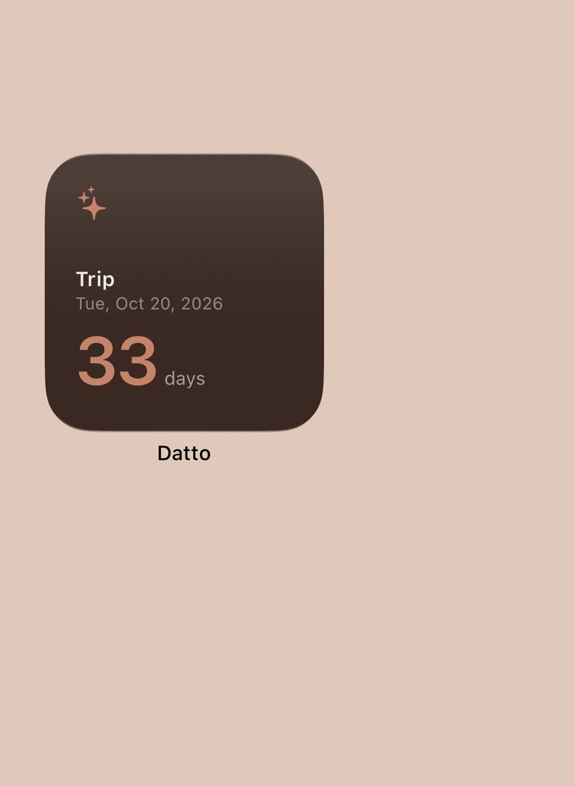
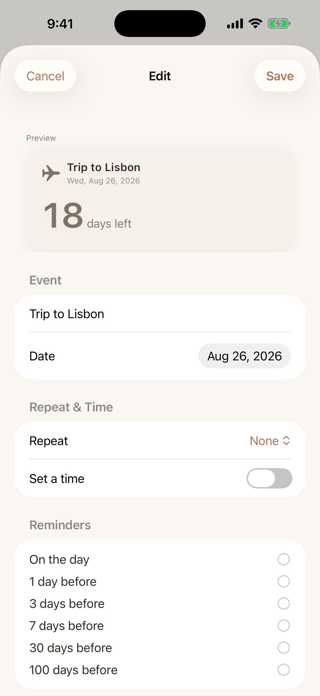

安静的倒计时：剩余天数就在主屏幕上，提醒从不发出声音。
考试、截止日期、生日、旅行、搬家—— 日子只需添加一次。

不用打开 App 就能看到。 1 个主屏幕小组件永久免费，还可以添加最多 3 个事件。

重复与时间点提醒。Pro 按年或按月重复，自动进入下一轮。在 100 天、前一天、当天提醒——始终静音。
12 种精选颜色，还可以用任何你喜欢的自定义颜色。 文字颜色会自动调整，始终清晰易读。
不需要养成什么习惯。放上去一次，每次看一眼就知道还剩多久。
没有广告。不用注册账户。
一次买断，不是订阅。
没有广告，没有订阅。Pro 一次买断。
全部应用
简简单单， 数到属于你的那一天。
English · 日本語 · 简体中文 · 繁體中文 · 한국어 · Deutsch · Français · Español · Italiano · Nederlands · Polski · Português · Русский · ไทย · Türkçe · Українська · Tiếng Việt · Bahasa Indonesia